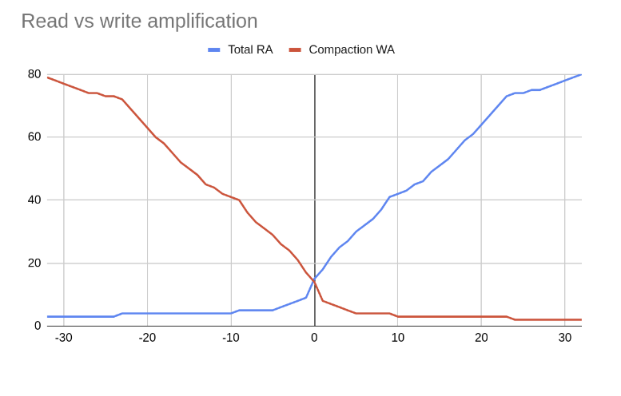
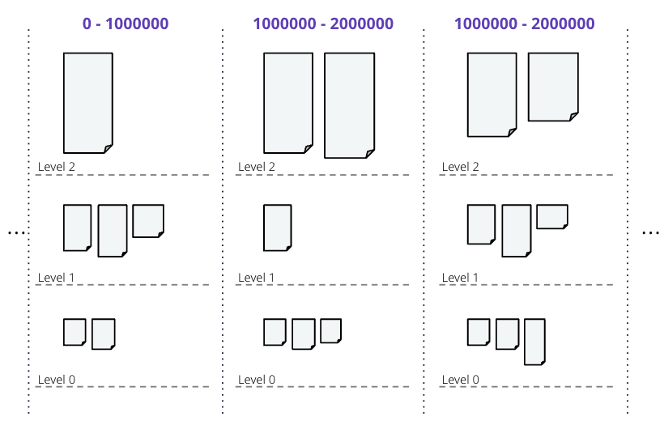
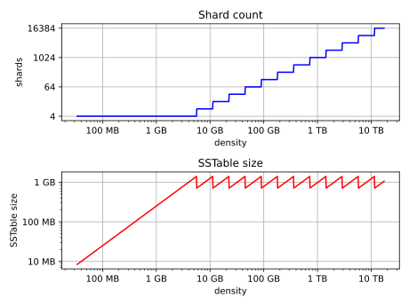
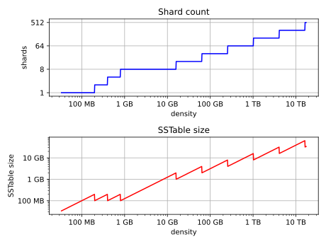
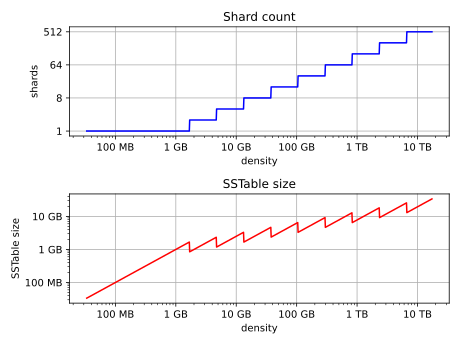
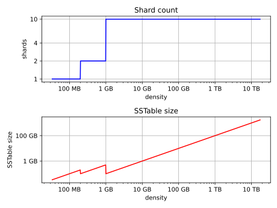

Unified Compaction Strategy (UCS)
The UnifiedCompactionStrategy (UCS) is recommended for most workloads, whether read-heavy, write-heavy, mixed read-write, or time-series.
There is no need to use legacy compaction strategies, because UCS can be configured to behave like any of them.
UCS is a compaction strategy that combines the best of the other strategies plus new features. UCS has been designed to maximize the speed of compactions, which is crucial for high-density nodes, using an unique sharding mechanism that compacts partitioned data in parallel. And whereas STCS, LCS, or TWCS will require full compaction of the data if the compaction strategy is changed, UCS can change parameters in flight to switch from one strategy to another. In fact, a combination of different compaction strategies can be used at the same time, with different parameters for each level of the hierarchy. Finally, UCS is stateless, so it does not rely on any metadata to make compaction decisions.
Two key concepts refine the definition of the grouping:
-
Tiered and levelled compaction can be generalized as equivalent, because both create exponentially-growing levels based on the size of SSTables (or non-overlapping SSTable runs). Thus, a compaction is triggered when more than a given number of SSTables are present on one level.
-
size can be replaced by density, allowing SSTables to be split at arbitrary points when the output of a compaction is written, while still producing a leveled hierarchy. Density is defined as the size of an SSTable divided by the width of the token range it covers.
Let’s look at the first concept in more detail.
Read and write amplification
UCS can adjust the balance between the number of SSTables consulted to serve a read (read amplification, or RA) versus the number of times a piece of data must be rewritten during its lifetime (write amplification, or WA). A single configurable scaling parameter determines how the compaction behaves, from a read-heavy mode to a write-heavy mode. The scaling parameter can be changed at any time, and the compaction strategy will adjust accordingly. For example, an operator may decide to:
-
decrease the scaling parameter, lowering the read amplification at the expense of more complex writes when a certain table is read-heavy and could benefit from reduced latencies
-
increase the scaling parameter, reducing the write amplification, when it has been identified that compaction cannot keep up with the number of writes to a table
Any such change only initiates compactions that are necessary to bring the hierarchy in a state compatible with the new configuration. Any additional work already done (for example, when switching from negative parameter to positive), is advantageous and incorporated.
In addition, by setting the scaling parameters to simulated a high tiered fanout factor, UCS can accomplish the same compaction as TWCS.

UCS uses a combination of tiered and leveled compaction, plus sharding, to achieve the desired read and write amplification. SSTables are sorted by token range, and then grouped into levels:

UCS groups SSTables in levels based on the logarithm of the SSTables density, with the fanout factor \(f\) as the base of the logarithm, and with each level triggering a compaction as soon as it has \(t\) overlapping SSTables.
The choice of the scaling parameter \(w\), determines the value of the fanout factor \(f\). In turn, \(w\) defines the mode as either leveled or tiered, and \(t\) is set as either \(t=2\) for leveled compaction, or \(t=f\) for tiered compaction. One last parameter, the minimum SSTable size, is required to determine the complete behaviour of UCS.
Three compaction types are possible, based on the value of \(w\), as shown in the diagram of RA and WA above:
-
Leveled compaction, with high WA, low RA: \(w < 0\), \(f = 2 - w\) and \(t=2\) \(L_{f}\) is the shorthand for specifying this range of \(w\) values (e.g., L10 for \(w=-8\)).
-
Tiered compaction, with low WA, high RA: \(w > 0\), \(f = 2 + w\) and \(t=f\). \(T_{f}\) is the shorthand (e.g., T4 for \(w = 2\)).
-
Leveled and tiered compaction behave identically in the center: \(w = 0\) and \(f = t = 2\). In shorthand, N for \(w = 0\).
|
Leveled compaction improves reads at the expense of writes and approaches a sorted array as \(f\) increases, whereas tiered compaction favors writes at the expense of reads and approaches an unsorted log as \(f\) increases. |
UCS permits the value of \(w\) to be defined separately for each level; thus, levels can have different behaviours. For example, level zero can use tiered compaction (STCS-like), while higher levels can be leveled (LCS-like), defined with increasing levels of read optimization.
Size-based leveling
The strategy splits SSTables at specific shard boundaries whose number grows with the density of an SSTable. The non-overlap between SSTables created by the splitting makes concurrent compactions possible. However, let’s ignore density and splitting for a moment and explore how SSTables are grouped into levels if they are never split.
Memtables are flushed to level zero (L0), and the memtable flush size \(s_{f}\) is calculated as the average size of all the SSTables written when a memtable is flushed. This parameter, \(s_{f}\), is intended to form the basis of the hierarchy where all newly-flushed SSTables end up. Using a fixed fanout factor \(f\) and \(s_{f}\), the level \(L\) for an SSTable of size \(s\) is calculated as follows:
SSTables are assigned to levels based on their size:
| Level | Min SSTable size | Max SSTable size |
|---|---|---|
0 |
0 |
\(s_{f} \cdot f\) |
1 |
\(s_{f} \cdot f\) |
\(s_{f} \cdot f^2\) |
2 |
\(s_{f} \cdot f^2\) |
\(s_{f} \cdot f^3\) |
3 |
\(s_{f} \cdot f^3\) |
\(s_{f} \cdot f^4\) |
… |
… |
… |
n |
\(s_{f} \cdot f^n\) |
\(s_{f} \cdot f^{n+1}\) |
Once SSTables start accumulating in levels, compaction is triggered when the number of SSTables in a level exceeds a threshold \(t\) discussed earlier:
-
\(t = 2\), leveled compaction:
-
An SSTable is promoted to level \(n\) with size \(\ge s_{f} \cdot f^n\).
-
When a second SSTable is promoted to that level (also with size \(\ge s_{f} \cdot f^n\)) they compact and form a new SSTable of size \(\sim 2s_{f} \cdot f^n\) in the same level for \(f > 2\).
-
After this repeats at least \(f-2\) more times (i.e., \(f\) total SSTables enter the level), the compaction result grows to \(\ge s_{f} \cdot f^{n+1}\) and enters the next level.
-
-
\(t = f\), tiered compaction:
-
After \(f\) SSTables enter level \(n\), each of size \(\ge s{f} \cdot f^n\), they are compacted and form a new SSTable of size \(\ge s_{f} \cdot f^{n+1}\) in the next level.
-
Overwrites and deletions are ignored in these schemes, but if an expected proportion of overwrites/deletions are known, the algorithm can be adjusted. The current UCS implementation does this adjustment, but doesn’t expose the adjustment at this time.
Number of levels
Using the maximal dataset size \(D\), the number of levels can be calculated as follows:
This calculation is based on the assumption that the maximal dataset size \(D\) is reached when all levels are full, and the maximal number of levels is inversely proportional to the logarithm of \(f\).
Thus, when we try to control the overheads of compaction on the database, we have a space of choices for the strategy that range from:
-
leveled compaction ( \(t=2\) ) with high \(f\):
-
low number of levels
-
high read efficiency
-
high write cost
-
moving closer to the behaviour of a sorted array as \(f\) increases
-
-
compaction with \(t = f = 2\) where leveled is the same as tiered and we have a middle ground with logarithmically increasing read and write costs;
-
tiered compaction ( \(t=f\) ) with high \(f\):
-
very high number of SSTables
-
low read efficiency
-
low write cost
-
moving closer to an unsorted log as \(f\) increases
-
This can be easily generalized to varying fan factors, by replacing the exponentiation with the product of the fan factors for all lower levels:
| Level | Min SSTable size | Max SSTable size |
|---|---|---|
0 |
0 |
\(s_{f} \cdot f_0\) |
1 |
\(s_{f} \cdot f_0\) |
\(s_{f} \cdot f_0 \cdot f_1\) |
2 |
\(s_{f} \cdot f_0 \cdot f_1\) |
\(s_{f} \cdot f_0 \cdot f_1 \cdot f_2\) |
… |
… |
… |
n |
\(s_{f} \cdot \prod_{i < n} f_i\) |
\(s_{f} \cdot \prod_{i\le n} f_i\) |
Density-based leveling
If we replace the size \(s\) in the previous discussion with the density measure
where \(v\) is the fraction of the token space that the SSTable covers, all formulae and conclusions remain valid. However, using density, the output can now be split at arbitrary points. If several SSTables are compacted and split, the new resulting SSTables formed will be denser than the original SSTables. For example, using a scaling parameter of T4, four input SSTables spanning 1/10 of the token space each, when compacted and split, will form four new SSTables spanning 1/40 of the token space each.
These new SSTables will be the same size but denser, and consequently will be moved to the next higher level, due to the higher density value exceeding the maximum density for the original compacted level. If we can ensure that the split points are fixed (see below), this process will repeat for each shard (token range), executing independent compactions concurrently.
|
It is important to account for locally-owned token share when calculating \(v\). Because vnodes mean that the local token ownership of a node is not contiguous, the difference between the first and last token is not sufficient to calculate token share; thus, any non-locally-owned ranges must be excluded. |
Using the density measure allows us to control the size of SSTables through sharding, as well as to execute compactions in parallel. With size-leveled compaction, we could achieve parallelization by pre-splitting the data in a fixed number of compaction shards, based on the data directories. However, that method requires the number of shards to be predetermined and equal for all levels of the hierarchy, and SSTables can become too small or too large. Large SSTables complicate streaming and repair and increase the duration of compaction operations, pinning resources to long-running operations and making it more likely that too many SSTables will accumulate on lower levels of the hierarchy.
Density-leveled compaction permits a much wider variety of splitting options. For instance, the size of SSTables can be kept close to a selected target, allowing UCS to deal with the leveling of both STCS (SSTable size grows with each level) and LCS (token share shrinks with each level).
Sharding
Basic sharding scheme
This sharding mechanism is independent of the compaction specification. There are a range of choices for splitting SSTables:
-
Split when a certain output size is reached (like LCS), forming non-overlapping SSTable runs instead of individual SSTables
-
Split the token space into shards at predefined boundary points
-
Split at predefined boundaries, but only if a certain minimum size has been reached
Splitting only by size results in individual SSTables with start positions that vary. To compact SSTables split in this way, you must choose to either compact the entire token range of a level sequentially or compact and copy some of the data more times than necessary, due to overlapping SSTables. If predefined boundary points are used, some of the token range can be sparser with fewer inputs and skew the density of the resulting SSTables. If that occurs, further splitting may be required. In the hybrid option, the density skew can occur less frequently, but can still occur.
To avoid these problems and permit concurrent compactions of all levels of the compaction hierarchy, UCS predefines boundary points for every compaction and always splits SSTables at these points. The number of boundaries is determined from the density of the input SSTables and the estimated density of the resulting SSTables. As the density grows larger, the number of boundaries is increased, keeping the size of individual SSTables close to a predefined target. Using power-of-two multiples of a specified base count, i.e., splitting shards in the middle, ensures that any boundary that applies to a given output density also applies to all higher densities.
Two sharding parameters can be configured:
-
base shard count \(b\)
-
target SSTable size \(s_{t}\)
At the start of every compaction, recall that the density of the output \(d\) is estimated, based on the input size \(s\) of the SSTables and the token range \(v\):
where \(v\) is the fraction of the token range covered by the input SSTables, in a value of 0 to 1. \(v = 1\) means that the entire token range is covered by the input SSTables, and \(v = 0\) means that the input SSTables cover no token range.
When the initial flush of the memtable to L0 occurs, \(v = 1\) since the entire token range is included in the memtable. In subsequent compactions, the token range \(v\) is the fraction of the token range covered by the SSTables being compacted.
With the calculated density of the output, plus the values of \(b\) and \(s_{t}\), the number of shards \(S\) into which to split the token space can be calculated:
where \(\lfloor x \rceil\) stands for \(x\) rounded to the nearest integer, i.e. \(\lfloor x + 0.5 \rfloor\). Thus, in the second case,the density is divided by the target size and rounded to a power-of-two multiple of \(b\). If the result is less than 1, the number of shards will be the base shard count, because the memtable is split into \({2 \cdot b}\), or \(b\) L0 shards.
However, the token range is not the only factor that influences if we switch between \(b\) shards or more (where the condition is greater than or equal to 1). If the memtable is very large and able to flush several gigabytes at once, \(d\) may be a magnitude larger than \(s_{t}\), and cause SSTables to be split into multiple shards even on L0. Conversely, if the memtable is small, \(d\) may still be smaller than \(s_{t}\) on levels above L0, where the condition is less than 1, and thus, there will be stem[b] shards.
\(S - 1\) boundaries are generated, splitting the local token space equally into \(S\) shards. Splitting the local token space will split the result of the compaction on these boundaries to form a separate SSTable for each shard. SSTables produced will have sizes that fall between \(s_{t}/\sqrt 2\) and \(s_{t} \cdot \sqrt 2\).
For example, let’s use a target SSTable size of \(s_{t} = 100MiB\) and \(b = 4\) base shards. If a \(s_{f} = 200 MiB\) input memtable is flushed, the condition for calculating the number of shards is:
This calculation results in \(0.5 < 1\), because the value of \(v = 1\) on the initial flush. Because the result is less than 1, the base shard count is used, and the memtable is split into four L0 shards of approximately 50MiB each. Each shard spans 1/4 of the token space.
To continue the example, on the next level of compaction, for just one of the four shards, let’s compact six of these 50 MiB SSTables. The estimated density of the output will be:
using 1/4 as the \(v\) value for the token range covered by the input SSTables.
The condition for splitting will be:
Thus, the number of shards will be calculated as:
or \(2^{\log_2 3}\), rounded to \(2^2 \cdot 4\) shards for the whole local token space, and that compaction covering 1/4 of the token space. Assuming no overwrites or deletions, the resulting SSTables will be of size 75 MiB, token share 1/16 and density 1200 MiB.
Full sharding scheme
This sharding scheme can be easily extended. There are two extensions currently implemented, SSTable growth and a minimum SSTable size.
First, let’s examine the case when the size of the data set is expected to grow very large.
To avoid pre-specifying a sufficiently large target size to avoid problems with per-SSTable overhead, an SSTtable growth parameter has been implemented.
This parameter determines what part of the density growth should be assigned to increased SSTable size, reducing the growth of the number of shards, and hence, non-overlapping SSTables.
The second extension is a mode of operation with a fixed number of shards that splits conditionally on reaching a minimum size.
Defining a minimum SSTable size, the base shard count can be reduced whenever a split would result in SSTables smaller than the provided minimum.
There are four user-defined sharding parameters:
-
base shard count \(b\)
-
target SSTable size \(s_{t}\)
-
minimum SSTable size \(s_{m}\)
-
SSTable growth component \(\lambda\)
The number of shards \(S\) for a given density \(d\) is then calculated as
Some useful combinations of these parameters:
-
The basic scheme above uses a SSTable growth \(\lambda=0\), and a minimum SSTable size \(s_{m}=0\). The graph below illustrates the behaviour for base shard count \(b=4\) and target SSTable size \(s_{t} = 1\, \mathrm{GB}\):

-
Using \(\lambda = 0.5\) grows the shard count and SSTable size evenly. When the density quadruples, both the shard count and the expected SSTable size for that density band will double. The example below uses \(b=8\), \(s_{t} = 1\, \mathrm{GB}\) and also applies a minimal size \(m = 100\, \mathrm{MB}\):

-
Similarly, \(\lambda = 1/3\) makes the the SSTable growth the cubic root of the density growth, i.e. the SSTable size grows with the square root of the growth of the shard count. The graph below uses \(b=1\) and \(s_{t} = 1\, \mathrm{GB}\) (note: when \(b=1\), the minimal size has no effect):

-
A growth component of 1 constructs a hierarchy with exactly \(b\) shards at every level. Combined with a minimum SSTable size, the mode of operation uses a pre-specified number of shards, but splits only after reaching a minimum size. Illustrated below for \(b=10\) and \(s_{m} = 100\, \mathrm{MB}\) (note: the target SSTable size is irrelevant when \(\lambda=1\)):

Choosing SSTables to compact
The density leveling separates SSTables in levels defined by the compaction configuration’s fan factors. However, unlike in size leveling, where SSTables are expected to cover the full token space, the number of SSTables on a level cannot be used as a trigger due to possible non-overlapping SSTables. Read queries are less efficient in this situation. To deal with this, execute sharding that performs multiple compactions on a level concurrently, and reduces the size of individual compaction operations. The non-overlapping section must be separated into different buckets, and the number of overlapping SSTables in a bucket determines what to do. A bucket is the selected set of SSTables that will be compacted together.
First form a minimal list of overlap sets that satisfy the following requirements:
-
two SSTables that do not overlap are never put in the same set
-
if two SSTables overlap, there is a set in the list that contains both
-
SSTables are placed in consecutive positions in the list
The second condition can also be rephrased to say that for any point in the token range, there is a set in the list that contains all SSTables whose range covers that point. In other words, the overlap sets give us the maximum number of SSTables that need to be consulted to read any key, i.e., the read amplification that our trigger \(t\) aims to control. We don’t calculate or store the exact spans the overlapping sets cover, only the participating SSTables. The sets can be obtained in \(O(n\log n)\) time.
For example, if SSTables A, B, C and D cover, respectively, tokens 0-3, 2-7, 6-9 and 1-8, we compute a list of overlap sets that are ABD and BCD. A and C don’t overlap, so they must be in separate sets. A, B and D overlap at token 2 and must thus be present in at least one set, and similarly for B, C and D at 7. Only A and D overlap at 1, but the set ABD already includes this combination.
These overlap sets are sufficient to decide whether or not a compaction should be carried out, if and only if the number of elements in a set is at least as large as \(s_{t}\). However, we may need to include more SSTables in the compaction than this set alone.
It is possible for our sharding scheme to end up constructing SSTables spanning differently-sized shards for the same level. One clear example is the case of leveled compaction. In this case, SSTables enter at some density, and after the first compaction the resulting SSTable is 2x bigger than the initial density, causing the SSTable to split in half at the middle of the token range. When another SSTable enters the same level, we will have separate overlap sets between the two older SSTables and the new one. For efficiency, the compaction that is triggered next needs to select both of the overlap sets.
To deal with cases of partial overlap, the overlap sets will transitively extend with all neighboring ones that share some SSTable. Thus, the set of all SSTables that is constructed has some chain of overlapping SSTables that connects it to the initial set. This extended set forms the compaction bucket.
|
In addition to |
In normal operation, we compact all SSTables in the compaction bucket. If compaction is very late, we may apply a limit on the number of overlapping sources we compact. In that case, we use the collection of oldest SSTables that would select at most limit-many in any included overlap set, making sure that if an SSTable is included in this compaction, all older ones are also included to maintain time order.
Selecting the compaction to run
Compaction strategies aim to minimize the read amplification of queries, which is defined by the number of SSTables that overlap on any given key. For highest efficiency in situations where compaction is late, a compaction bucket is selected with the highest overlap among the possible choices. If there are multiple choices, choose one uniformly and randomly within each level. Between the levels, prefer the lowest level, as this is expected to cover a larger fraction of the token space for the same amount of work.
Under sustained load, this mechanism prevents the accumulation of SSTables on some level that could sometimes happen with legacy strategies. With older strategies, all resources could be consumed by L0 and SSTables accumulating on L1. With UCS, a steady state where compactions always use more SSTables than the assigned threshold and fan factor is accomplished, and a tiered hierarchy is maintained based on the lowest overlap they are able to maintain for the load.
Major compaction
Under the working principles of UCS, a major compaction is an operation which compacts together all SSTables that have (transitive) overlap, and where the output is split on shard boundaries appropriate for the expected resulting density.
In other words, a major compaction will result in \(b\) concurrent compactions, each containing all SSTables covered in each of the base shards. The result will be split on shard boundaries whose number depends on the total size of data contained in the shard.
Differences with STCS and LCS
Note that there are some differences between tiered UCS and legacy STCS, and between leveled UCS and legacy LCS.
Tiered UCS vs STCS
STCS is very similar to UCS. However, STCS defines buckets/levels by looking for similarly sized SSTables, rather than using a predefined banding of sizes. Thus, STCS can end up with some odd selections of buckets, spanning SSTables of wildly different sizes; UCS’s selection is more stable and predictable.
STCS triggers a compaction when it finds at least min_threshold SSTables on some bucket, and it compacts between min_threshold and max_threshold SSTables from that bucket at a time.
min_threshold is equivalent to UCS’s \(t = f = w + 2\).
UCS drops the upper limit because its compaction is still efficient with very large numbers of SSTables.
UCS uses a density measure to split results, in order to keep the size of SSTables and the time for compactions low. Within a level, UCS will only consider overlapping SSTables when deciding whether the threshold is hit, and will independently compact sets of SSTables that do not overlap.
If there are multiple choices to pick SSTables within a bucket, STCS groups them by size, while UCS groups them by timestamp. Because of that, STCS easily loses time order which makes whole table expiration less efficient. UCS efficiently tracks time order and whole table expiration. Because UCS can apply whole-table expiration, this features also proves useful for time-series data with time-to-live constraints.
UCS-leveled vs LCS
LCS seems very different in behaviour compared to UCS. However, the two strategies are, in fact, very similar.
LCS uses multiple SSTables per level to form a sorted run of non-overlapping SSTables of small fixed size.
So physical SSTables on increasing levels increase in number (by a factor of fanout_size) instead of size.
In this way, LCS reduces space amplification and ensures shorter compaction times.
When the combined size of a run on a level is higher than expected, it selects some SSTables to compact with overlapping ones from the next level of the hierarchy.
Eventually, the size of the next level gets pushed over its size limit and triggers higher-level operations.
In UCS, SSTables on increasing levels increase in density by a fanout factor \(f\). A compaction is triggered when a second overlapping SSTable is located on a sharded level. UCS compacts the overlapping bucket on that level, and the result most often ends up on that level, too. But eventually, the data reaches sufficient size for the next level. Given an even data spread, UCS and LCS behave similarly, with compactions triggered in the same timeframe.
The two approaches end up with a very similar effect. UCS has the added benefit that compactions cannot affect other levels. In LCS, L0-to-L1 compactions can prevent any concurrent L1-to-L2 compactions, an unfortunate situation. In UCS, SSTables are structured such that they can be easily switched to tiered UCS or changed with different parameter settings.
Because LCS SSTables are based on size only and thus vary on split position, when LCS selects SSTables to compact on the next level, some SSTables that only partially overlap are included. Consequently, SSTables can be compacted more often than strictly necessary.
UCS handles the problem of space amplification by sharding on specific token boundaries. LCS splits SSTables based on a fixed size with boundaries usually falling inside SSTables on the next level, kicking off compaction more frequently than necessary. Therefore UCS aids with tight write amplification control. Those boundaries guarantee that we can efficiently select higher-density SSTables that exactly match the span of the lower-density ones.
UCS Options
| Subproperty | Description |
|---|---|
enabled |
Enables background compaction. Default value: true |
only_purge_repaired_tombstone |
Enabling this property prevents data from resurrecting when repair is not run within the Default value: false |
scaling_parameters |
A list of per-level scaling parameters, specified as \(L_{f}\), \(T_{f}\), \(N\), or an integer value specifying \(w\) directly. If more levels are present than the length of this list, the last value is used for all higher levels. Often this will be a single parameter, specifying the behaviour for all levels of the hierarchy. Leveled compaction, specified as \(L_{f}\), is preferable for read-heavy workloads, especially if bloom filters are not effective (e.g. with wide partitions); higher levelled fan factors improve read amplification (and hence latency, as well as throughput for read-dominated workloads) at the expense of increased write costs. The equivalent of legacy LCS is L10. Tiered compaction, specified as \(T_{f}\), is preferable for write-heavy workloads, or ones where bloom filters or time order can be exploited; higher tiered fan factors improve the cost of writes (and hence throughput) at the expense of making reads more difficult. \(N\) is the middle ground that has the features of leveled (one SSTable run per level), as well as tiered (one compaction to be promoted to the next level) and a fan factor of 2. This value can also be specified as T2 or L2. Default value: T4 (STCS with threshold 4) |
target_sstable_size |
The target sstable size \(s_{t}\), specified as a human-friendly size in bytes, such as MiB. The strategy will split data in shards that aim to produce sstables of size between \(s_{t}/\sqrt{2}\) and \(s_{t} \cdot \sqrt{2}\). Smaller sstables improve streaming and repair, and make compactions shorter. On the other hand, each sstable on disk has a non-trivial in-memory footprint that also affects garbage collection times. Increase this if the memory pressure from the number of sstables in the system becomes too high. Default: 1 GiB |
min_sstable_size |
The minimum sstable size, applicable when the base shard count will result is SSTables that are considered too small. If set, the strategy will split the space into fewer than the base count shards, to make the estimated SSTables size at least as large as this value. A value of 0 disables this feature. Default: 100MiB |
base_shard_count |
The minimum number of shards \(b\), used for levels with the smallest density. This gives the minimum compaction concurrency for the lowest levels. A low number would result in larger L0 sstables but may limit the overall maximum write throughput (as every piece of data has to go through L0). Default: is 4 (1 for system tables, or when multiple data locations are defined) |
sstable_growth |
The sstable growth component \(\lambda\), applied as a factor in the shard exponent calculation. This is a number between 0 and 1 that controls what part of the density growth should apply to individual sstable size and what part should increase the number of shards. Using a value of 1 has the effect of fixing the shard count to the base value. Using 0.5 makes the shard count and SSTable size grow with the square root of the density growth. This is useful to decrease the sheer number of SSTables created for very large data sets. For example, without growth correction, a data set of 10TiB with 1GiB target size would result in over 10K SSTables. That many SSTables can result in too much overhead, both for on-heap memory used by per-SSTables structures, as well as lookup-time for intersecting SSTables and tracking overlapping sets during compaction. For example, with a base shard count of 4, the growth factor can reduce the potential number of SSTables to ~160 of size ~64GiB, manageable in terms of memory overhead, individual compaction duration, and space overhead. The parameter can be adjusted, increasing the value to get fewer but bigger SSTables on the top level, and decreasing the value to favour a higher count of smaller SSTables. Default: 0.333 (SSTable size grows with the square root of the growth of the shard count) |
expired_sstable_check_frequency_seconds |
Determines how often to check for expired SSTables. Default: 10 minutes |
max_sstables_to_compact |
The maximum number of sstables to compact in one operation. Larger value may reduce write amplification but can cause very long compactions, and thus a very high read amplification overhead while such compactions are processing. The default aims to keep the length of operations under control and prevent accumulation of SSTables while compactions are taking place. If the fanout factor is larger than the maximum number of SSTables, the strategy will ignore the latter. Default: none (although 32 is a good choice) |
overlap_inclusion_method |
Specifies how to extend overlapping sections into buckets. TRANSITIVE makes sure that if we choose an SSTable to compact, we also compact the ones that overlap with it. SINGLE only does this extension once (i.e. it selects only SSTables that overlap with the original overlapping SSTables section. NONE does not add any overlapping sstables. NONE is not recommended, SINGLE may offer a little more parallelism at the expense of recompacting some data when upgrading from LCS or during range movements. Default: TRANSITIVE |
unsafe_aggressive_sstable_expiration |
Expired SSTables are dropped without checking if their data is shadowing other SSTables.
This flag can only be enabled if Default: false |
In cassandra.yaml, there is also one parameter that affects compaction:
- concurrent_compactors
-
Number of simultaneous compactions to allow, NOT including validation "compactions" for anti-entropy repair. Higher values increase compaction performance but may increase read and write latencies.